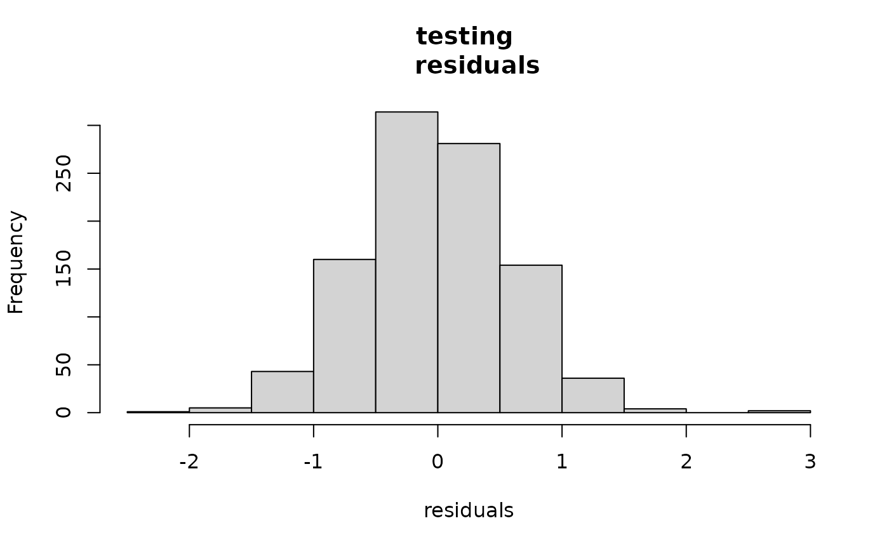
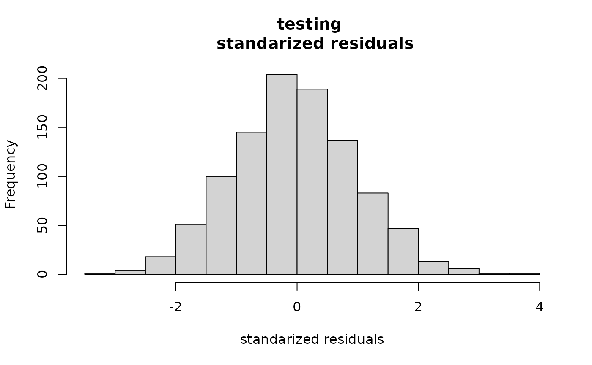

Overview
The goal of outerbase is to make the production of
near-interpolators easy, stable, and scalable. It is based on a
C++ backend and interfaced with R via
Rcpp. Under the hood, it leverages unique, custom linear
algebra using RcppArmadillo (Armadillo) and omp.
The overall structure is designed to be interacted with in an
object-oriented manner using Rcpp modules.
There are ways to interact with outerbase for those who
are uncomfortable with (or just actively detest) object oriented
programming.
To begin, load the package.
Note that if you built this package from source, make sure you use a
compiler that can process omp commands to access the entire
speed benefits.
Simple prediction
To understand how to get started with using the package, we predict
using data from a function with an eight dimensional input commonly
known as the Borehole function.
We begin by generating 1000 points using a test function
?obtest_borehole8d built into the package.
sampsize = 400
d = 8
x = matrix(runif(sampsize*d),ncol=d) #uniform samples
y = obtest_borehole8d(x) + 0.5*rnorm(sampsize)Our goal will be to design a predictor for y given
x that is a near-interpolator.
The simplest way to interact with this package is using
?obfit (fitting outerbase). The function requires
x, y and two other objects.
The value of numb is the number of basis functions you
want to use. The choice of numb is still under research,
but generally you want it to be large as tolerable. Play around!
The underlying concepts of this approach come from Gaussian
processes. Thus the core building block of predictors will be
covariances functions. The choice of the covariances needed for
obfit is a list of strings corresponding to each column in
x. Type listcov() to discover what covariance
functions are are currently deployed.
listcov()
#> [1] "mat25pow" "mat25" "mat25ang"If you are curious about any of them, type,
e.g. ?covf_mat25pow.
Note obfit has some checks in place to prevent serious
damage. They are not foolproof.
obmodel = obfit(x, y, covnames=rep("elephant",8))
#> Error in .checkcov(covnames[k], x[, k]):
#> covariances must be from listcov()
obmodel = obfit(x, y[1:200], covnames=rep("mat25pow",5))
#> Error in obfit(x, y[1:200], covnames = rep("mat25pow", 5)):
#> x and y dims do not align
obmodel = obfit(x[1:2,], y[1:2], covnames=rep("mat25pow",8))
#> Error in obfit(x[1:2, ], y[1:2], covnames = rep("mat25pow", 8)):
#> dimension larger than sample size has not been tested
obmodel = obfit(x, y, numb = 2, covnames=rep("mat25pow",8))
#> Error in obfit(x, y, numb = 2, covnames = rep("mat25pow", 8)):
#> number of basis functions should be less than twice the dimension
obmodel = obfit(100*x, y, covnames=rep("mat25pow",8))
#> Error in .checkcov(covnames[k], x[, k]):
#> x ranges exceed limits of covariance functions
#> the limits are between 0 and 1
#> try rescaling
obmodel = obfit(0.001*x, y, covnames=rep("mat25pow",8))
#> Error in .checkcov(covnames[k], x[, k]):
#> x are too small for ranges
#> the limits are between 0 and 1
#> try rescalingBelow is one correct deployment, where mat25pow is used
for all dimensions. This should take a bit to run, but it should be
around a second on most modern computers.
ptm = proc.time()
obmodel = obfit(x, y, numb=300, covnames=rep("mat25pow",8),
verbose = 3)
#> doing partial optimization
#> max number of cg steps set to 100
#>
#> ########started BFGS#######
#> iter.no obj.value wolfe.cond.1 wolfe.cond.2 learning.rate
#> 0 219.59 NA NA 0.1
#> restarted hessian
#> restarted hessian
#> num iter: 3 obj start: 219.5902 obj end: 219.5896
#> final learning rate: 1e-04
#> approx lower bound (not achieved): -312.7595
#> #########finished BFGS########
#>
#> doing optimization 1
#> max number of cg steps set to 254
#>
#> ########started BFGS#######
#> iter.no obj.value wolfe.cond.1 wolfe.cond.2 learning.rate
#> 0 625.485 NA NA 5e-05
#> iter.no obj.value wolfe.cond.1 wolfe.cond.2 learning.rate
#> 1 520.651 -104.823 7999.61 0.0016
#> iter.no obj.value wolfe.cond.1 wolfe.cond.2 learning.rate
#> 2 356.469 -164.164 -47184.5 0.000380731
#> iter.no obj.value wolfe.cond.1 wolfe.cond.2 learning.rate
#> 3 0.356744 -356.08 -315.781 0.0267736
#> iter.no obj.value wolfe.cond.1 wolfe.cond.2 learning.rate
#> 4 -12.5289 -12.876 -34683 0.00120167
#> restarted hessian
#> iter.no obj.value wolfe.cond.1 wolfe.cond.2 learning.rate
#> 6 -72.0436 -59.5097 -26.0728 0.037664
#> iter.no obj.value wolfe.cond.1 wolfe.cond.2 learning.rate
#> 7 -158.492 -86.4404 -21.4396 0.10456
#> iter.no obj.value wolfe.cond.1 wolfe.cond.2 learning.rate
#> 8 -245.959 -87.4571 -122.123 0.131047
#> iter.no obj.value wolfe.cond.1 wolfe.cond.2 learning.rate
#> 9 -281.4 -35.4369 -15.7983 0.160578
#> iter.no obj.value wolfe.cond.1 wolfe.cond.2 learning.rate
#> 10 -315.904 -34.5001 -13.3045 0.192804
#> iter.no obj.value wolfe.cond.1 wolfe.cond.2 learning.rate
#> 11 -354.678 -38.7699 -17.6158 0.227303
#> iter.no obj.value wolfe.cond.1 wolfe.cond.2 learning.rate
#> 12 -397.337 -42.6538 -19.3518 0.263599
#> iter.no obj.value wolfe.cond.1 wolfe.cond.2 learning.rate
#> 13 -446.317 -48.9744 -25.6992 0.301197
#> iter.no obj.value wolfe.cond.1 wolfe.cond.2 learning.rate
#> 14 -497.983 -51.6602 -39.2992 0.339598
#> iter.no obj.value wolfe.cond.1 wolfe.cond.2 learning.rate
#> 15 -540.852 -42.8637 -42.5791 0.378328
#> iter.no obj.value wolfe.cond.1 wolfe.cond.2 learning.rate
#> 16 -581.199 -40.3415 -33.3437 0.416948
#> iter.no obj.value wolfe.cond.1 wolfe.cond.2 learning.rate
#> 17 -660.317 -79.1067 -64.0902 0.455065
#> iter.no obj.value wolfe.cond.1 wolfe.cond.2 learning.rate
#> 18 -703.331 -43.0067 -91.0784 0.123085
#> iter.no obj.value wolfe.cond.1 wolfe.cond.2 learning.rate
#> 19 -747.847 -44.508 -84.7406 0.15177
#> iter.no obj.value wolfe.cond.1 wolfe.cond.2 learning.rate
#> 20 -814.205 -66.3448 -270.509 0.0916298
#> iter.no obj.value wolfe.cond.1 wolfe.cond.2 learning.rate
#> 21 -905.965 -91.7404 -296.101 0.116368
#> iter.no obj.value wolfe.cond.1 wolfe.cond.2 learning.rate
#> 22 -934.631 -28.6576 -88.5978 0.144295
#> iter.no obj.value wolfe.cond.1 wolfe.cond.2 learning.rate
#> 23 -956.78 -22.1429 -41.5365 0.175116
#> iter.no obj.value wolfe.cond.1 wolfe.cond.2 learning.rate
#> 24 -977.859 -21.0747 -23.4543 0.208445
#> iter.no obj.value wolfe.cond.1 wolfe.cond.2 learning.rate
#> 25 -1001.3 -23.4374 -20.0027 0.243833
#> iter.no obj.value wolfe.cond.1 wolfe.cond.2 learning.rate
#> 26 -1028.53 -27.2264 -18.2935 0.280791
#> iter.no obj.value wolfe.cond.1 wolfe.cond.2 learning.rate
#> 27 -1064.14 -35.6083 -22.7983 0.31882
#> iter.no obj.value wolfe.cond.1 wolfe.cond.2 learning.rate
#> 28 -1103.9 -39.7461 -58.7581 0.35743
#> iter.no obj.value wolfe.cond.1 wolfe.cond.2 learning.rate
#> 29 -1120.13 -16.2293 -15.2188 0.396161
#> iter.no obj.value wolfe.cond.1 wolfe.cond.2 learning.rate
#> 30 -1134.3 -14.1639 -9.06699 0.434595
#> iter.no obj.value wolfe.cond.1 wolfe.cond.2 learning.rate
#> 31 -1152.71 -18.4086 -15.6514 0.472363
#> iter.no obj.value wolfe.cond.1 wolfe.cond.2 learning.rate
#> 32 -1171.49 -18.7817 -22.2915 0.509153
#> iter.no obj.value wolfe.cond.1 wolfe.cond.2 learning.rate
#> 33 -1188.35 -16.8507 -18.3144 0.544708
#> iter.no obj.value wolfe.cond.1 wolfe.cond.2 learning.rate
#> 34 -1209.03 -20.6788 -15.3827 0.578825
#> iter.no obj.value wolfe.cond.1 wolfe.cond.2 learning.rate
#> 35 -1237.63 -28.6011 -19.1216 0.611354
#> iter.no obj.value wolfe.cond.1 wolfe.cond.2 learning.rate
#> 36 -1260.89 -23.2561 -25.8212 0.64219
#> iter.no obj.value wolfe.cond.1 wolfe.cond.2 learning.rate
#> 37 -1268.37 -7.4751 -6.67341 0.67127
#> iter.no obj.value wolfe.cond.1 wolfe.cond.2 learning.rate
#> 38 -1273.67 -5.3034 -2.26442 0.698566
#> iter.no obj.value wolfe.cond.1 wolfe.cond.2 learning.rate
#> 39 -1283.54 -9.86448 -7.66035 0.72408
#> iter.no obj.value wolfe.cond.1 wolfe.cond.2 learning.rate
#> 40 -1293.49 -9.94741 -6.55674 0.747839
#> iter.no obj.value wolfe.cond.1 wolfe.cond.2 learning.rate
#> 41 -1302.33 -8.84174 -6.4604 0.769887
#> iter.no obj.value wolfe.cond.1 wolfe.cond.2 learning.rate
#> 42 -1306.47 -4.13322 -2.68941 0.790286
#> iter.no obj.value wolfe.cond.1 wolfe.cond.2 learning.rate
#> 43 -1308.31 -1.84852 -0.983125 0.809107
#> num iter: 44 obj start: 625.4848 obj end: -1309.971
#> final learning rate: 0.8264287
#> approx lower bound (not achieved): -1312.51
#> #########finished BFGS########
#>
#> doing optimization 2
#> max number of cg steps set to 314
#>
#> ########started BFGS#######
#> iter.no obj.value wolfe.cond.1 wolfe.cond.2 learning.rate
#> 0 -1307.21 NA NA 0.413214
#> iter.no obj.value wolfe.cond.1 wolfe.cond.2 learning.rate
#> 1 -1308.91 -1.69874 -0.105866 0.413214
#> iter.no obj.value wolfe.cond.1 wolfe.cond.2 learning.rate
#> 2 -1314.59 -5.67711 -2.69489 0.451396
#> iter.no obj.value wolfe.cond.1 wolfe.cond.2 learning.rate
#> 3 -1320.46 -5.86965 -2.82939 0.488767
#> iter.no obj.value wolfe.cond.1 wolfe.cond.2 learning.rate
#> 4 -1326.52 -6.05995 -3.22347 0.525039
#> iter.no obj.value wolfe.cond.1 wolfe.cond.2 learning.rate
#> 5 -1332.22 -5.70483 -3.96333 0.55998
#> iter.no obj.value wolfe.cond.1 wolfe.cond.2 learning.rate
#> 6 -1336.66 -4.43742 -3.45809 0.593411
#> iter.no obj.value wolfe.cond.1 wolfe.cond.2 learning.rate
#> 7 -1339.95 -3.29032 -3.53154 0.625201
#> iter.no obj.value wolfe.cond.1 wolfe.cond.2 learning.rate
#> 8 -1341.76 -1.80249 -2.93696 0.655266
#> iter.no obj.value wolfe.cond.1 wolfe.cond.2 learning.rate
#> 9 -1342.68 -0.927648 -1.90767 0.683559
#> num iter: 10 obj start: -1307.211 obj end: -1343.709
#> final learning rate: 0.7100656
#> approx lower bound (not achieved): -1350.03
#> #########finished BFGS########
print((proc.time() - ptm)[3])
#> elapsed
#> 10.165Note that the package is made using custom parallelization at the
linear-algebra level. The package relies on omp for
parallelization, so if the package was not compiled with that in place
there will be no benefits. The default call of obfit grabs
all available threads, which is ideal for desktops/laptops. It might be
less ideal for large clusters where the CPU might be shared.
We can adjust the number of threads manually. Below we reduce ourselves to a single thread, which should slow things down.
ptm = proc.time()
obmodel = obfit(x, y, numb=300, covnames=rep("mat25pow",8),
nthreads=1) #optional input
print((proc.time() - ptm)[3])
#> elapsed
#> 10.641We can then predict using ?obpred. While it is not an
exact interpolator, it is close.
predtr = obpred(obmodel, x)
rmsetr = sqrt(mean((y-predtr$mean)^2))
plot(predtr$mean, y,
main=paste("training \n RMSE = ", round(rmsetr,3)),
xlab="prediction", ylab = "actual")Since we generated this data, we can show that outerbase
can reasonably predict ground truth, meaning overfitting is not an
issue.
ytrue = obtest_borehole8d(x)
rmsetr = sqrt(mean((ytrue-predtr$mean)^2))
plot(predtr$mean, ytrue,
main=paste("oracle \n RMSE = ", round(rmsetr,3)),
xlab="prediction", ylab="actual")1000 test points generated the same way as our original
data can also serve as a verification process.
xtest = matrix(runif(1000*d),ncol=d) #prediction points
ytest = obtest_borehole8d(xtest) + 0.5*rnorm(1000)The predictions at these new points are also quite good. Not quite as good as the residuals on the test set, but we are extrapolating here.
predtest = obpred(obmodel, xtest)
rmsetst = sqrt(mean((ytest-predtest$mean)^2))
plot(predtest$mean, ytest,
main=paste("testing \n RMSE = ", round(rmsetst,3)),
xlab="prediction", ylab="actual")This package also produces variances on the predictions which we can use to test reasonableness. The fact that the second histogram looks like a standard Normal is promising that the predictions are reasonable.
hist((ytest-predtest$mean),
main="testing \n residuals", xlab="residuals")
hist((ytest-predtest$mean)/sqrt(predtest$var),
main="testing \n standarized residuals",
xlab="standarized residuals")